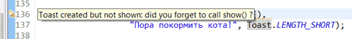
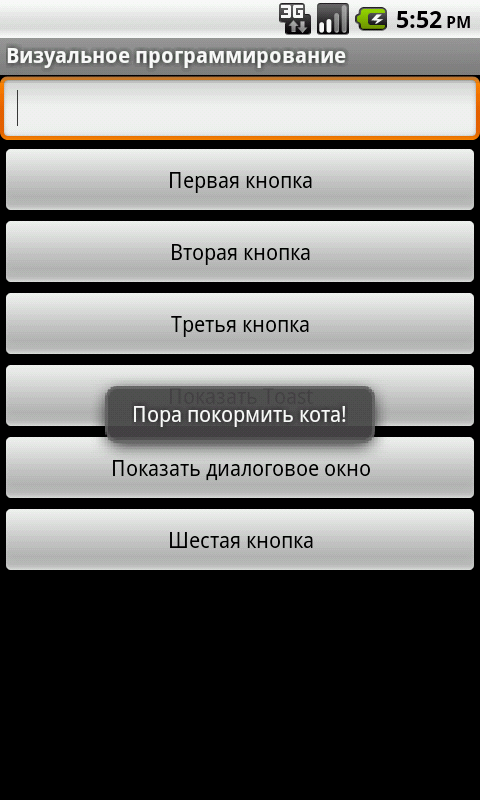
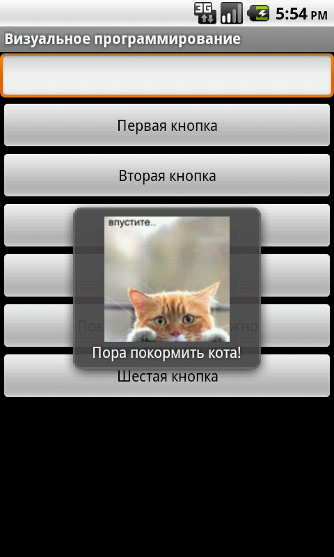

/* Моя кошка замечательно разбирается в программировании. Стоит мне объяснить проблему ей - и все становится ясно. */
John Robbins, Debugging Applications, Microsoft Press, 2000

/* Моя кошка замечательно разбирается в программировании. Стоит мне объяснить проблему ей - и все становится ясно. */
John Robbins, Debugging Applications, Microsoft Press, 2000
Что такое тост? Представьте себе картину. За столом собралась большая куча народа и весело отмечает день рождения кота. Стоит шум и гам. Соседи громко разговаривают между собой и не обращают внимания на других. И тут из-за стола поднимается всеми уважаемый человек со стаканом вина и вилочкой стучит по стеклу стакана, чтобы привлечь внимание присутствующих. Шум смолкает и человек произносит тост. Также и в телефоне, когда вы увлечены какой-то задачей, вдруг всплывает сообщение, привлекая ваше внимание. Это и есть Toast. Второй пример - когда вы заряжаете специальный хлеб (тосты) в тостер, то они через определенное время подпрыгивают, сигнализируя о своей готовности. Посмотрим, как это работает в Android.
Всплывающее уведомление (Toast Notification) является сообщением, которое появляется на поверхности окна приложения, заполняя необходимое ему количество пространства, требуемого для сообщения. При этом текущая деятельность приложения остается работоспособной для пользователя. В течение нескольких секунд сообщение плавно закрывается. Всплывающее уведомление также может быть создано службой, работающей в фоновом режиме. Как правило, всплывающее уведомление используется для показа коротких текстовых сообщений.
Для создания всплывающего уведомления необходимо инициализировать объект Toast при помощи метода Toast.makeText(), а затем вызвать метод show() для отображения сообщения на экране:
Toast toast = Toast.makeText(getApplicationContext(),
"Пора покормить кота!", Toast.LENGTH_SHORT);
toast.show();
У метода makeText() есть три параметра:
Если покопаться в исходниках Android, то можно найти такие строчки:
private static final int LONG_DELAY = 3500; // 3.5 seconds
private static final int SHORT_DELAY = 2000; // 2 seconds
Как видите, уведомления выводятся на 3 с половиной секунды или на 2 секунды. Других вариантов нет, не пытайтесь использовать другие значения - у вас ничего не получится.
По умолчанию стандартное всплывающее уведомление появляется в нижней части экрана. Изменить место появления уведомления можно с помощью метода setGravity(int, int, int). Этот метод принимает три параметра:
Например, если вы хотите, чтобы уведомление появилсь в центре экрана, то используйте следующий код:
toast.setGravity(Gravity.CENTER, 0, 0);
Если нужно сместить уведомление направо, то просто увеличьте значение второго параметра. Для смещения вниз нужно увеличить значение последнего параметра. Соответственно, для смещения вверх и влево используйте отрицательные значения.
Типичная ошибка начинающих программистов - забывают добавить вызов метода show() для отображения сообщения на экране. К счастью, в последних версиях ADT, начиная с версии 20.0, редактор кода Eclipse выводит предупреждающий значок с текстом:

Создайте новый проект или используйте старый проект из предыдущих занятий. Добавьте на неё ещё одну кнопку. Изменим текст на кнопке на Показать Toast, а также присвоим свойству On click значение buttonShowToast_Click. Теперь напишем код:
public void buttonShowToast_Click(View v){
//создаем и отображаем текстовое уведомление
Toast toast = Toast.makeText(getApplicationContext(),
"Пора покормить кота!",
Toast.LENGTH_SHORT);
toast.setGravity(Gravity.CENTER, 0, 0);
toast.show();
}
Запустите приложение и нажмите кнопку. В центре экрана появится на короткое время текстовое сообщение, которое само исчезнет.

Для закрепления материала напишем еще один пример. Для этого закомментируем предыдущий код для щелчка кнопки и напишем такой код:
int duration = Toast.LENGTH_LONG;
Toast toast2 = Toast.makeText(getApplicationContext(),
R.string.CatFood,
duration);
toast2.setGravity(Gravity.TOP, 0, 0);
toast2.show();
Я подумал, что вы можете не заметить сообщение, которое показывается слишком мало времени. Поэтому на этот раз я использовал константу LENGTH_LONG, чтобы вы успели обратить внимание на сообщение и покормить наконец несчастного голодного кота. Помимо этого, я поместил текст сообщения в XML-ресурсы, как это рекомендуется всегда делать. Кроме того, сообщение будет выводиться в верхней части экрана.
Неплохо бы оформить наш код в виде функций, например, так:
public static void showMessage(Context c, String text, int duration) {
Toast.makeText(c, text, duration).show();
}
public static void showMessage(Context c, int id, int duration) {
Toast.makeText(c, id, duration).show();
}
public static void showMessage(Context c, String text, int duration, int gravity) {
Toast t = Toast.makeText(c, text, duration);
t.setGravity(gravity, 0, 0);
t.show();
}
public static void showMessage(Context c, String text, int duration, int gravity, int[] offset) {
Toast t = Toast.makeText(c, text, duration);
t.setGravity(gravity, offset[0], offset[1]);
t.show();
}
// вызываем одну из функций
@Override
public boolean onTouchEvent(MotionEvent event) {
if(event.getAction() == MotionEvent.ACTION_DOWN) {
showMessage(this, "Сообщение в центре экрана", Toast.LENGTH_LONG, Gravity.CENTER);
}
return super.onTouchEvent(event);
}
Как правило для Toast используются короткие текстовые сообщения. Но при необходимости вы можете добавить к сообщению и картинку. Используя метод setView(), принадлежащий объекту Toast, вы можете задать любое представление (включая разметку) для отображения.
Начнем с приготовлений. В структуре проекта добавьте к папке res новую подпапку drawable и скопируйте в нее какую-нибудь небольшую картинку JPG или PNG. Картинка будет доступна приложению как ресурс через название файла без расширения. Например, я добавил в папку файл с изображением кота defaultcat.jpg. и могу получить к нему доступ через выражние R.drawable.defaultcat. Теперь, чтобы изображение появилось в стандартном Toast-сообщении, нам потребуется программно создать объект класса ImageView и задать для него изображение из ресурсов с помощью метода setImageResource. Сам по себе стандартный внешний вид Toast состоит из контейнера LinearLayout, в который нужно добавить созданный объект ImageView. Можно задать также позицию, в которую следует вывести изображение. Если указать значение 0, то изображение будет показано выше текста. Код для создания Toast с изображением выглядит следующим образом:
Toast toast3 = Toast.makeText(getApplicationContext(),
R.string.CatFood, Toast.LENGTH_LONG);
toast3.setGravity(Gravity.CENTER, 0, 0);
LinearLayout toastView = (LinearLayout) toast3.getView();
ImageView imageCat = new ImageView(getApplicationContext());
imageCat.setImageResource(R.drawable.defaultcat);
toastView.addView(imageCat, 0);
toast3.show();

Пример из книги Google android: программирование для мобильных устройств
Если простого текстового сообщения недостаточно для уведомления пользователя приложения, можно создать собственный дизайн разметки своего уведомления. Для получения разметки из ХМL-файла и работы с ней в программе используется класс LayoutInflater и его методы getLayoutInflater() или getSystemService(), которые возвращают объект LayoutInflater. Затем вызовом метода inflate() получают корневой объект view этой разметки. Например, для файла разметки уведомления с именем custom_layout.xml и его корневого представления c идентификатором android:id="@+id/toast_layout" код будет таким:
LayoutInflater inflater = getLayoutInflater();
View layout = inflater.inflate(R.layout.custom_layout,
(ViewGroup) findViewById(R.id.toast_layout));
Параметры, передаваемые в метод inflate():
После получения корневого представления из него можно получить все дочерние представления уже известным методом findViewByid() и определить информационное наполнение для этих элементов.
Затем создается объект Toast и устанавливаются нужные свойства, например, Gravity и продолжительность времени показа уведомления.
Toast toast = new Toast(getApplicationContext());
toast.setGravity(Gravity.CENTER_VERTICAL, 0, 0);
toast.setDuration(Toast.LENGTH_LONG);
После этого вызывается метод setView(), которому передаётся разметка уведомления, и метод show(), чтобы отобразить уведомление с собственной разметкой:
toast.setView(layout);
toast.show();
Для создания новой разметки уведомления щёлкните правой кнопкой мыши на папке с проектом и в контекстном меню выберите Android Tools | New Resource File. Появится окно New Android XML File. В поле FiIe введите имя нового файла разметки — custom_layout.xml, в группе переключателей What type of resource would you like to create? установите значение Layout, поля Folder и Select the root element for the XML оставьте без изменений.
Нажмите кнопку Finish. В созданном файле разметки корневому элементу LinearLayout присвойте идентификатор toast_layout.
Определите два дочерних элемента ImageView и TextView:
<LinearLayout xmlns:android="http://schemas.android.com/apk/res/android"
android:id="@+id/toast_layout"
android:orientation="horizontal"
android:layout_width="fill_parent"
android:layout_height="fill_parent"
android:padding="1Odp"
android:background="#DAAA">
<ImageView android:id="@+id/image"
android:layout_width="wrap_content"
android:layout_height="fill_parent"
android:layout_marginRight="10dp"/>
<TextView android:id="@+id/text"
android:layout_width="wrap_content"
android:layout_height="fill_parent"
android:textColor="#FFF'7>
</LinearLayout>
Запустите проект на выполнение. При нажатии кнопки вызова должно появиться на несколько секунд окно уведомления с текстовым сообщением и значком. (Полный листинг смотрите в книге)
Как элемент графического интерфейса Toast должен быть вызван в потоке GUI, иначе существует риск выброса межпотокового исключения. В листинге объект Handler используется для гарантии того, что уведомление Toast было вызвано в потоке GUI.
private void mainProcessing() {
Thread thread = new Thread(null, doBackgroundThreadProcessing,
"Background");
thread.start();
}
private Runnable doBackgroundThreadProcessing = new Runnable() {
public void run() {
backgroundThreadProcessing();
}
};
private void backgroundThreadProcessing() {
handler.post(doUpdateGUI);
}
// Объект Runnable, который вызывает метод из потока GUI
private Runnable doUpdateGUI = new Runnable() {
public void run() {
Context context = getApplicationContext();
String msg = "To open mobile development!";
int duration = Toast.LENGTH_SHORT;
Toast.makeText(context, msg, duration).show();
}
};
Сегодня вы научились выводить всплывающие сообщения на экран, а также получили образец кода, который вы обязаны вставлять в любое ваше приложение, чтобы пользователи никогда не забывали кормить своего питомца.
Сейчас вы можете пропустить данный абзац. Но в будущем можете столкнуться с проблемой. Тогда вспомните про эту статью и перечитайте данный абзац снова (не забудьте поддержать проект). Toast относится к классу Activity. Если вы захотите вызвать всплывающее сообщение в фрагменте, то проблема может поставить вас в тупик. Вам нужно добавить новую переменную класса Activity через метод getActivity():
Activity activity = getActivity();
Toast.makeText(activity, "Кота покормили?", Toast.LENGTH_SHORT).show();
В Android 4.4 внешний вид всплывающего сообщения изменился, прямоугольник закруглили.
электрификация частного дома ; сайты по поиску грузоперевозок ; компании по организации свадеб, организация банкет .; втб 24 на кондратьевском, акция .; круиз на лайнере по европе , оаэ.; вит d3, холекальциферол википедия .